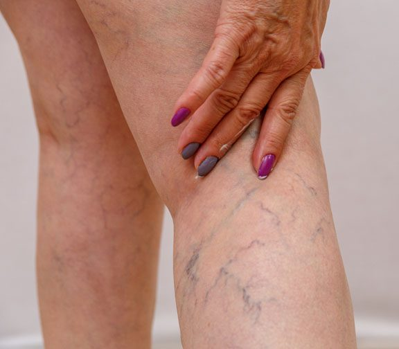

Effects of reflexology on varicose veins

Introduction
Varicose veins are enlarged, twisted veins that usually appear on the legs and feet due to poor circulation and weakened vein walls. While medical treatments such as compression therapy and surgery exist, many individuals seek natural remedies like reflexology to help manage symptoms. But can reflexology truly benefit varicose veins? This article explores the effects of reflexology on varicose veins, including its potential benefits, key reflex points, and techniques.
Understanding Varicose Veins and Their Causes
Varicose veins occur when the valves in the veins fail to function properly, causing blood to pool rather than flow efficiently back to the heart. Common causes include:
- Poor Circulation: Weak blood flow leads to vein swelling and enlargement.
- Prolonged Standing or Sitting: Long periods of immobility increase pressure in the leg veins.
- Obesity: Excess weight places additional strain on veins.
- Pregnancy: Increased blood volume and hormonal changes can contribute to vein issues.
- Aging: As we age, veins lose elasticity, making them more prone to becoming varicose.
- Genetics: A family history of varicose veins increases the likelihood of developing them.
What Is Reflexology?
Reflexology is a complementary therapy that involves applying pressure to specific reflex points on the feet, hands, and ears. These points correspond to different organs and systems in the body. By stimulating these areas, reflexologists aim to enhance circulation, reduce inflammation, and promote overall well-being.
How Reflexology Affects Varicose Veins
Reflexology does not cure varicose veins, but it may help alleviate symptoms and improve circulation in the legs. Here’s how:
- Improves Blood Circulation: Reflexology stimulates blood flow, preventing further vein congestion.
- Reduces Swelling and Inflammation: By promoting lymphatic drainage, reflexology can decrease fluid retention and swelling.
- Eases Leg Pain and Discomfort: Regular reflexology sessions may help relieve pain associated with varicose veins.
- Promotes Relaxation and Reduces Stress: Stress can exacerbate circulation issues; reflexology helps induce relaxation and support overall vein health.
- Enhances Lymphatic Drainage: Reflexology techniques encourage the removal of toxins and excess fluids, reducing vein pressure.
Key Reflex Points for Varicose Veins Relief
Certain reflex points are believed to support circulation and vein health.
- Leg and Foot Reflex Points (Feet)
Location: The inner arch of the foot, corresponding to the legs. How It Helps: Stimulating this area may improve blood flow and reduce leg discomfort. How to Apply Pressure: Use thumb-walking techniques along the arch for 2-3 minutes.
- Lymphatic System Reflex (Feet and Hands)
Location: The upper portion of the foot, near the toes, and the webbing between fingers. How It Helps: Supports lymphatic drainage, reducing swelling and fluid buildup. How to Apply Pressure: Gently press and massage the area in circular motions.
- Heart Reflex (Feet and Hands)
Location: The ball of the foot and center of the palm. How It Helps: Encourages better circulation and oxygen delivery. How to Apply Pressure: Apply firm pressure in small circles for 1-2 minutes.
- Kidney and Liver Reflex (Feet)
Location: The middle of the sole (kidney) and outer arch (liver). How It Helps: Supports blood purification and fluid balance. How to Apply Pressure: Massage these areas using deep, steady pressure.
- Calf Muscle Reflex (Feet)
Location: The area just below the ankle, corresponding to the calves. How It Helps: Helps relieve muscle tension and supports vein function. How to Apply Pressure: Use firm upward strokes and circular motions.
Reflexology Techniques for Varicose Veins
Using effective reflexology techniques can enhance its benefits.
- Thumb Walking
A technique where the thumb moves in a “walking” motion over reflex points to stimulate blood flow.
- Circular Massage
Using circular motions with the thumb or fingers helps encourage relaxation and circulation.
- Light to Firm Pressure Application
Holding pressure on key reflex points for 30-60 seconds promotes vein relaxation and reduces discomfort.
- Foot Rolling with a Reflexology Ball
Rolling the soles of the feet on a reflexology ball can enhance circulation and relieve tension.
Scientific Evidence Supporting Reflexology for Circulation and Vein Health
Although more research is needed, some studies suggest that reflexology may aid circulation and reduce symptoms related to varicose veins.
- A 2015 Study in the Journal of Alternative Medicine found that reflexology improved circulation and reduced swelling in participants with vascular issues.
- A 2018 Review Published in Complementary Therapies in Medicine highlighted reflexology’s effectiveness in improving blood flow and reducing fluid retention.
- A 2022 Study in the International Journal of Reflexology Research suggested that regular reflexology sessions may enhance vein function and reduce leg discomfort.
How to Incorporate Reflexology into Your Routine
To make reflexology a regular part of your varicose vein management plan, consider these steps:
- Self-Reflexology: Dedicate 5-10 minutes daily to massaging key reflex points.
- Professional Reflexology Sessions: Visit a trained reflexologist for targeted relief.
- Pair with Physical Activity: Walking and stretching help maximize reflexology’s benefits.
- Use Compression Therapy: Combining reflexology with compression socks can improve circulation.
- Stay Hydrated and Maintain a Healthy Diet: Proper hydration and balanced nutrition support vein health.
Additional Natural Remedies for Varicose Veins
Reflexology works best when combined with other natural approaches.
- Elevate Your Legs
Raising your legs above heart level for 15 minutes daily helps reduce vein pressure.
- Herbal Remedies
Horse chestnut extract and witch hazel are known for their vein-supporting properties.
- Regular Exercise
Engaging in low-impact activities like swimming and cycling can promote circulation.
- Massage Therapy
Massaging the legs can encourage better blood flow and relaxation.
Conclusion: Can Reflexology Help with Varicose Veins?
While reflexology is not a cure for varicose veins, it offers a natural and non-invasive way to manage symptoms. By stimulating key reflex points, reflexology may enhance circulation, reduce swelling, and promote leg health. Incorporating reflexology into your self-care routine, along with exercise and a healthy lifestyle, can contribute to better vein function and overall well-being.